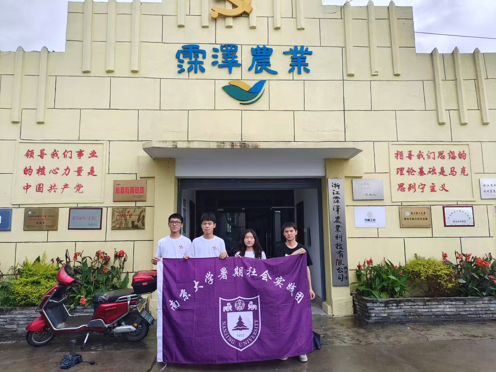
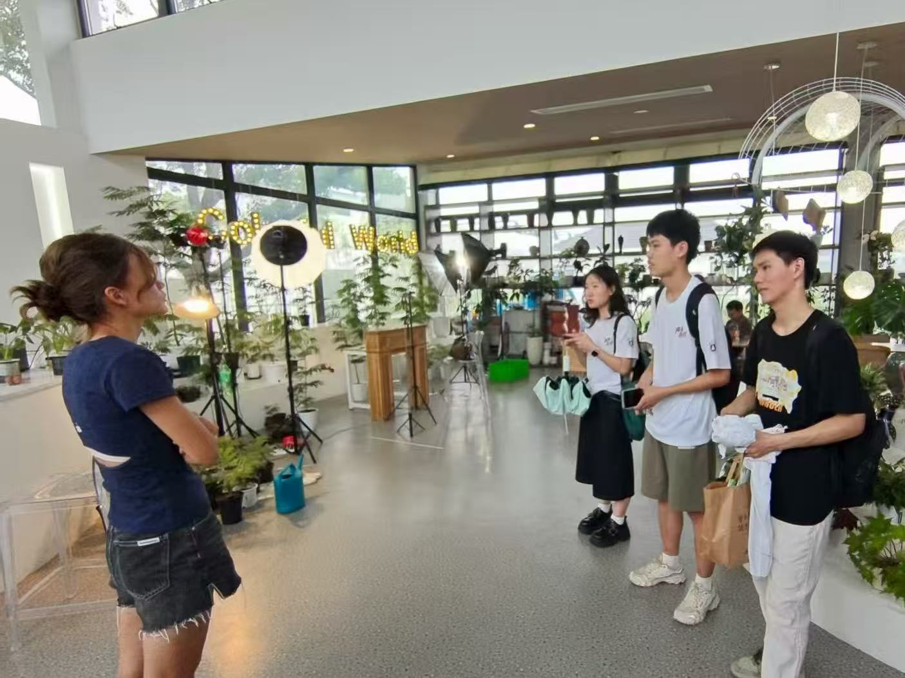

为了解码乡村振兴战略下村落应该如何利用自身优势、迎着电商经济繁荣的时代浪潮、实现特色化可持续发展， 我们以浙江省嘉兴市旧埭村为调研锚点，组建了由10位来自南京大学不同年级、不同专业的学子构成的名为"律动云商"的社会实践团队， 团队成员来自法学院、物理学院、人工智能学院、匡亚明学院等多个学院，涵盖法学、物理、人工智能、智能软件工程、计算机科学等专业，跨专业、跨学科、文理交融、优势互补， 期待能够通过问卷调查、深入访谈、区域调研、学科分析等方式形成对乡村发展的独特思考，以青春智慧助力乡村振兴，用专业知识服务数字经济发展。

